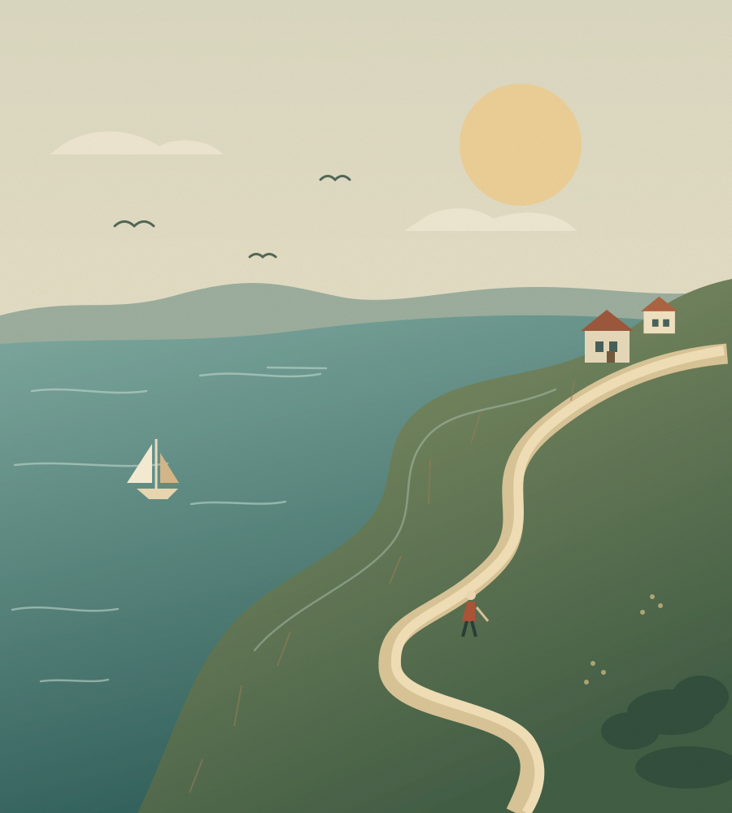

The Salt Path
Bracken Quay → Gullhaven
Two headlands, one sheltered cove, and the sort of harbour where lunch becomes the afternoon. Walk the upper coast path through gorse and sea thrift; sleep in two small inns, never far from the harbour.
- Time away
- 3 days / 2 nights
- On foot, total
- 24 km
- Ascent, total
- 520 m
- Walking pace
- Gentle–steady
Two nights with breakfast, bag transfers, route notes, and arrival/departure station hops.
£295per person · two sharing · GBP
Ask about the coastDay by day, what’s included & single rooms
- Day 1
Arrive at Rook Cross by 16:00. We take you to Bracken Quay and your first harbour inn. Collect the route notes; find fish pie. No scheduled walk.
- Day 2
Bracken Quay to Saltglass Cove, 12 km. Follow the sea-thrift cliffs, then the sheltered gorse lane. Your bag goes ahead to the cove inn.
- Day 3
Saltglass Cove to Gullhaven, 12 km. Take the upper headland path, not the tide-dependent beach cut. Your bag meets you for the station transfer; book onward travel after 16:00.